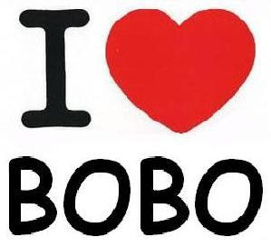

O bobo, por não se ocupar com ambições, tem tempo para ver, ouvir e tocar o mundo. O bobo é capaz de ficar sentado quase sem se mexer por duas horas. Se perguntado por que não faz alguma coisa, responde: "Estou fazendo. Estou pensando."
Ser bobo às vezes oferece um mundo de saída porque os espertos só se lembram de sair por meio da esperteza, e o bobo tem originalidade, espontaneamente lhe vem a idéia.
O bobo tem oportunidade de ver coisas que os espertos não vêem. Os espertos estão sempre tão atentos às espertezas alheias que se descontraem diante dos bobos, e estes os vêem como simples pessoas humanas. O bobo ganha utilidade e sabedoria para viver. O bobo nunca parece ter tido vez. No entanto, muitas vezes, o bobo é um Dostoievski.
Há desvantagem, obviamente. Uma boba, por exemplo, confiou na palavra de um desconhecido para a compra de um ar refrigerado de segunda mão: ele disse que o aparelho era novo, praticamente sem uso porque se mudara para a Gávea onde é fresco. Vai a boba e compra o aparelho sem vê-lo sequer. Resultado: não funciona. Chamado um técnico, a opinião deste era de que o aparelho estava tão estragado que o conserto seria caríssimo: mais valia comprar outro. Mas, em contrapartida, a vantagem de ser bobo é ter boa-fé, não desconfiar, e portanto estar tranqüilo. Enquanto o esperto não dorme à noite com medo de ser ludibriado. O esperto vence com úlcera no estômago. O bobo não percebe que venceu.
Aviso: não confundir bobos com burros. Desvantagem: pode receber uma punhalada de quem menos espera. É uma das tristezas que o bobo não prevê. César terminou dizendo a célebre frase: Até tu Brutus?
Bobo não reclama. Em compensação, como exclama!
Os bobos,
com todas as suas palhaçadas,
devem estar todos no céu.
Se Cristo tivesse sido esperto
não teria morrido na cruz.
O bobo é sempre tão simpático que há espertos que se fazem passar por bobos. Ser bobo é uma criatividade e, como toda criação, é difícil. Por isso é que os espertos não conseguem passar por bobos. Os espertos ganham dos outros. Em compensação os bobos ganham a vida. Bem-aventurados os bobos porque sabem sem que ninguém desconfie. Aliás não se importam que saibam que eles sabem.
Há lugares que facilitam mais as pessoas serem bobas (não confundir bobo com burro, com tolo, com fútil). Minas Gerais, por exemplo, facilita ser bobo. Ah, quantos perdem por não nascer em Minas! 
Bobo é Chagall, que põe vaca no espaço, voando por cima das casas. É quase impossível evitar excesso de amor que o bobo provoca. É que só o bobo é capaz de excesso de amor. E só o amor faz o bobo.